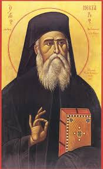

Силиврије изданак и Егине чувара који се у последње доба јави, врлине пријатеља искреног, Нектарија поштујмо верни као божанственог служитеља Христовог: јер точи многобројна исцељења онима који благочестиво кличу: слава Христу Који те прослави, слава Ономе Ко ти даде благодат чудеса, слава Ономе Који кроз тебе свима исцељење дарује.
Православља звезду новосветлу и Цркве новостворену ограду опевајмо у весељу срдачном: јер прослављен дејством Духа, исцељење точи и благодат штедру онима који кличу: радуј се, оче Нектарије.
Богоизбрани Нектарије, Митрополите пентапољски и Чудотворче егински, приносимо ти мољења за болесне сроднике наше, јер си се као исцелитељ чудотворни од рака и од болести других јавио, свецелој васељени благодат дарујући. Због тога ти једним устима и једним срцем свагда кличемо: Радуј се, Нектарије, архијереју Божији!
Ангела Чувара у Светоме Крштењу добивши, од младости своје к равноангелском животу си стремио, оче наш Нектарије. Сада, пак, са Ангелима гледањем Славе Божије насладошћујући се, моли свих Ангела Владику за оне који ти овако певају:
Видевши те како се у ваздуху молиш, монахиња нека се престраши, богољупче. Ти, пак, дар молитве скривајући, уста монахињина забраном си запечатио, Господу у срцу кличући: Алилуја!
Ум си Христов молитвом стекао, Свети Нектарије, да разумеш шта је воља Божија – добра, угодна и савршена. Научи и нас да, на свакоме месту, без гнева и сумње, подижемо руке к Богу, да примиш од нас похвално клицање:
У силу Свевишњега оденувши се, оче Нектарије, силу си речи Христових потврдио: „У Царству Моме, “ како говори Христос, „нити се жене, нити удају“, већ као Ангели на Небесима непрестано поју: Алилуја!
Пречиста Богородица, на располагању имајући свеколику војску небеску, тебе угодниче, као Ангела у телу, за прославитеља чудеса Својих изабра. Ми, пак, Дјевин омофор над тобом видећи, са страхом и љубављу припадамо ти, кличући:
Када је јереј твог храма – Нектарије, у очајање пао, јер је рану од рака крвоточиву на грудима имао, ти си му се, као у телу, тад јавио и поцеловао га. Он је, пак, исцељеље добивши од тебе, који си потом невидив постао, са сузама Богу завапио: Алилуја!
Многи чуше за дивно исцељење што си, за живота, учинио, када си се онима који, у земљи канадској, Свету Литургију служаху, у Духу Светоме јавио, Чудотворче Нектарије, и тамошњег узетог човека, к Чаши га призвавши, подигао. И тај је, по свом исцељењу, до острва Егине дошао тебе у телу сусревши, велегласно клицао:
Богопокретаном звездом покајања над васељену узишао си, оче, непрестано нам сјајећи зрацима што сакрушују људска безакоња. Обасјај и умове наше да грехе своје сагледамо и да Владику умилостивимо, појући: Алилуја!
Чисте девојчице, архијереја свога видевши где у лепоти душе и тела пред Богом стоји и, у њему великог молитвеника и чудотворца препознавши, једногласно ти ускликнуше, Свети Нектарије:
Проповедниче Јединога Доброга, Нектарије блажени, смирио си се под моћну руку Божију и Она те узвиси. Не заборави на чеда своја, што витла их пучина узбуркана, већ их на обалу смирења изведи, да узвеличају Бога твога, појући: Алилуја!
Просијалу светлост блаженства Христових стекао си постепено, богомудри Нектарије: кротошћу и миром, уздржањем и љубављу душу своју си просветлио, да од нас сад слушаш ово:
Желећи да човек Божији савршен будеш, Нектарије праведни, пут си непорочни изабрао: на егинском острву, као на барци, житејско море препливавши, победно си запевао Господу: Алилуја!
Као изврсни учитељ Новог Завета си се јавио, реч Божију животом својим проповедајући: јер борба наша није против тела и крви, већ против кнеза таме овога века. Ми, пак, крепећи се у Господу, кличемо ти, богосилни Нектарије:
У теби се јави савршенство чудесно, само савршенима у љубави доступно. Усаврши љубављу душе наше, љубвеобилни Нектарије, да, у човека савршеног узраставши, Богу запојемо: Алилуја!
Сав живећи у низини, попут ништих, на висотама си са Богом, то јест са Љубављу, пребивао. Даруј нам, о неботајниче Нектарије, познање љубави, у коме да ти певамо овако:
Сви Ангели и људи удивише се јављеној, у теби, светости, велики Нектарије: јер у Христу нема ни Јудејца, ни Јелина, ни роба, ни слободњака, ни мушког, ни женског, већ нова твар која Искупитељу твари поје: Алилуја!
Беседници многоречити умукоше, животу твоме дивећи се, свети оче Нектарије, јер свет си био, а себе си грешним називао; јер си духован био, а од земнога праха си узет; јер си по смрти на Небо вазнесен био, а за живота умом у ад си сишао. Ми, пак, отворивши уста, као деца кличемо ти:
Хотећи да спасеш душу своју, као невесту девствену си је Женику једином обручио. Сада, пак, у брачну одају Христову са хором девствених ушавши, славни Нектарије, песму појеш: Алилуја!
Бедем си свима који прибегавају к теби, хвале достојни Нектарије, јер благодат имаш да болесне лечиш и к небескоме наслеђу узводиш: стога излечи и нас, чада твоја, и у Царство Христово нас узведи, да свецелом душом кличемо ти овако:
Појање си Богомајци приносио, угодниче Божији, Мајком Светлости Дјеву називајући; сада, пак, просветљен савршено разумљењем тајне Оваплоћења, песму узносиш: Алилуја!
Светлошћу божанске славе просвећенога гледамо те, Нектарије, у шатору славе: просветли одећу душа наших светотројичним сијањем, да ти непрестано појемо:
Трудећи се, благодат од Бога ти дату умножио си, рабе Божији, добри и верни Нектарије; учини стога да и ми посао духовни обавимо и да, зараду стекавши, Христу запевамо: Алилуја!
Славимо чудеса твоја, пречудесни Нектарије, јер се Христос у тебе богато уселио: тога ради чудотворну десницу Његову низведи на нас који ти говоримо овако:
О свештена главо, лекару дивни, архијереју Божији Нектарије! Прими ово мало, али усрдно мољење чада твојих, која верују благодати што је у теби. Даруј нам исцељење од болести и од вечне нас избави погибељи, да Христу Спасу нашем са радошћу кличемо: Алилуја! (Овај Кондак се чита три пута, а онда Икос 1. и Кондак 1.)
МОЛИТВА ПРВА
О мироточива главо, Светитељу Нектарије, архијереју Божији! У време великог одступништва и безбожништва, побожношћу си просијао и сакрушио главу прегордога сатане, који нас је израњавио. Тога ради дарова ти Христос да лечиш болести неизлечиве, које нас спопадоше због безакоња наших. Верујемо: заволео те је Бог праведнога, да тебе ради нас грешне помилује, од проклетства да нас разреши, од болести да нас избави и да се по свој васељени слави страшно и преславно име Његово, Оца и Сина и Светога Духа, сада и увек и у векове векова. Амин.
МОЛИТВА ДРУГА
О Свети Нектарије, оче богомудри! Прими, чувару вере православне, исповедање уста људи христоименитих, који се сабраше данас у храму благодаћу Божијом која у теби живи. Вест достиже до земље (руске и српске) да се ти, велики међу Светима угодниче Божији, јављаш на свим странама света онима који призивају име твоје и од рака исцељење болеснима дарујеш. Чусмо за јереја, твога имењака, Нектарија, који храм у име твоје подиже, са мукама великим, јер од рака на грудима тешко боловаше и крв му сваки дан из ране истицаше и страдаше он веома, али дело свето не остављаше. А ти си, Светитељу многомилостиви, са Неба изненада сишао и пред њиме се у храму појавио. Он, пак, мислећи за тебе да си сабрат и један од смртних, од тебе затражи да се за њега помолиш и рече: „Болестан сам веома, али хоћу свету цркву да подигнем, да у њој Свету Литургију макар једном одслужим заједно са парохијанима, а после нека умрем, јер се смрти не бојим.“ А ти си, оче, иако бестелесан беше, сузама лице своје оросио! И загрливши страдалника, целивао си га и рекао: „Не тугуј, чадо моје, јер ћеш, пошто болешћу будеш искушан, убрзо оздравити. И сви ће за чудо ово сазнати.“ Овај, пак, исцеливши се, разумеде с ким је говорио, али ти си тад већ невидив постао. О велики угодниче Христов, Нектарије! Тај храм је данас довршен и чудеса се твоја као море умножише! Ми схватисмо да молитве праведника треба да буду подржане нашим усрђем за службу Божију и решеношћу да за Христа умиремо, да бисмо оздравили. Моле те, оче праведни, болесна чада твоја: да се на нама испуни воља Божија, добра, угодна и савршена, јер Бог неће смрти грешника, већ да се грешник обрати и жив да буде. Ти, пак, пророче воље Божије, исцели нас благодатним јављењем својим, да велики буде Бог на Небесима и на земљи у векове векова! Амин.